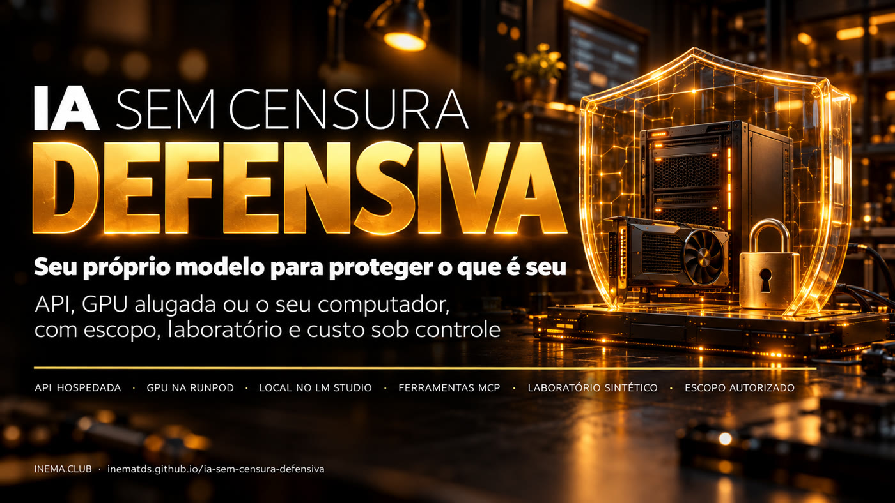

Seu próprio modelo, sem sermão, para examinar o que é seu — com escopo registrado, laboratório falso e a GPU parada quando você não está usando.

Este é um kit gratuito do INEMA, em português, para quem estuda segurança e quer um modelo de IA aberto que não recuse perguntas técnicas — os chamados modelos abliterated, dos quais a recusa foi removida. Ele mostra como ligar esse modelo ao DeepSeek Harness (um agente de código aberto) por uma API, por uma GPU alugada na RunPod ou pelo LM Studio no seu computador. Traz prompts prontos, scripts que provam se texto, ferramenta e imagem funcionam, um laboratório falso para treinar e uma guarda que para a GPU ociosa. Você precisa de um assistente que leia arquivos, Python 3.10+ e, conforme a rota, uma conta de API ou de GPU — e de permissão para tudo o que for testar.
Tirar a recusa do modelo não tira a responsabilidade: ela passa para o escopo, o laboratório e as permissões que você dá. O kit traz as três coisas prontas.
API hospedada, GPU na RunPod ou LM Studio local. Em todas, o mesmo checador prova texto em dois turnos, uma função inofensiva e a leitura de uma imagem — cada um separado.
Uma página falsa em 127.0.0.1 com dois achados de configuração. A checagem só roda com arquivo de escopo válido, faz uma requisição e recusa qualquer host remoto.
Uma guarda local mede o tempo sem uso e, se você mandar, para o seu Pod conferindo ID e nome — começando em simulação e confirmando EXITED.
A ordem é sempre a mesma: escopo e laboratório primeiro, uma capacidade por vez, custo sob controle.
Menos passos, sem GPU. Você paga o uso da API (assinatura de chat não inclui). Exemplos de provedor: Abliteration e OrcaRouter.
Você escolhe modelo e runtime. Paga hora de GPU e armazenamento. Exemplo: Huihui Qwen3.5 9B abliterated Q6_K com projetor de visão.
Sem conta de GPU, se a máquina aguentar. Exemplo: Huihui Qwen3.6 35B-A3B abliterated Q4_K (~21,7 GB + ~0,9 GB de projetor).
Modelos e preços conferidos em 26/10/2026. Mudam: confira antes de baixar ou alugar.
Modelo aberto do qual alguém removeu, por técnica, a tendência de recusar pedidos.
Agente de código aberto que conversa com o modelo e dá a ele ferramentas, numa pasta de trabalho.
Padrão para ligar ferramentas a um agente de IA. Aqui: navegador (Playwright) e pesquisa (Firecrawl).
GGUF é o formato do arquivo do modelo; Q4_K e Q6_K são níveis de compressão (quantização): menor número, arquivo menor e um pouco menos de qualidade.
Arquivo extra (mmproj) que deixa o modelo ler imagens. Precisa combinar com o modelo e com o runtime.
O programa que roda o modelo e serve a API (ex.: o servidor do LM Studio).
Pod é a máquina com GPU alugada na RunPod. EXITED é o status de parada: só ele prova que a GPU parou de cobrar por hora.
Scanner de linha de comando que roda "templates". O kit traz um passivo, só para o laboratório.
O endereço da API do modelo, terminado em /v1.
Os scripts do kit usam só a biblioteca padrão do Python. O resto depende da rota.
Para baixar o kit e rodar os scripts e testes.
git clone https://github.com/inematds/ia-sem-censura-defensiva cd ia-sem-censura-defensiva python3 kit/scripts/doutor.py
Claude Code, Codex ou similar. Ele segue os prompts e mostra antes de fazer. Node.js na versão que o Harness pedir.
API: conta e crédito no provedor. RunPod: conta e crédito. Local: memória livre e disco. Nenhuma assinatura de chat inclui API ou GPU.
Os passos 1 a 4 rodam hoje, sem conta nenhuma. Do 5 em diante, siga os prompts da sua rota.
O doutor só lê versões e portas; não instala nada e não abre chave.
git clone https://github.com/inematds/ia-sem-censura-defensiva && cd ia-sem-censura-defensiva python3 kit/scripts/doutor.py
25 testes em 127.0.0.1, com servidores falsos: escopo negado, alvo remoto recusado, escopo vencido, achado e correção, proxy sem token, relógio ocioso e falha de parada.
python3 -m unittest discover -s kit/testes -v # Ran 25 tests ... OK
Dois terminais. A checagem cria um escopo de 10 minutos só para o seu laboratório, faz uma requisição e lista os achados.
# terminal 1 python3 kit/scripts/laboratorio.py # terminal 2 python3 kit/scripts/checagem_segura.py --lab-local-autorizado # "achados": X-Content-Type-Options e Referrer-Policy ausentes
Pare o laboratório (Ctrl+C), ligue a versão corrigida e repita a mesma checagem. Use o modelo de relatório para separar evidência, hipótese e correção.
python3 kit/scripts/laboratorio.py --corrigido python3 kit/scripts/checagem_segura.py --lab-local-autorizado # "achados": []
Abra CONFIGURA-COM-ASSISTENTE.md, copie o pedido e cole no Claude Code (ou similar) aberto na pasta do kit. Ele pergunta a rota, a memória livre e o orçamento.
Siga os prompts numerados: o assistente instala o que faltar (Harness, LM Studio, Nuclei) e mostra antes. Na rota local, com o LM Studio instalado (o comando lms vem com ele), o servidor fica preso em 127.0.0.1:
lms load SEU-MODELO --context-length 4096 --identifier defensivo-local --ttl 600 lms server start --bind 127.0.0.1 --port 1234
A chave (se houver) vem de um arquivo privado; nunca do chat. Cada capacidade sai como resultado separado.
# rota local: sem chave python3 kit/scripts/checa_endpoint.py --base-url http://127.0.0.1:1234/v1 \ --modelo defensivo-local --funcao --imagem kit/exemplos/teste-visao.png
# API ou nuvem: a chave vai num arquivo privado, uma linha só mkdir -p ~/.segredos && chmod 700 ~/.segredos nano ~/.segredos/chave-modelo && chmod 600 ~/.segredos/chave-modelo export INEMA_CHAVE_MODELO_ARQ=~/.segredos/chave-modelo python3 kit/scripts/checa_endpoint.py --base-url https://SEU-PROVEDOR/v1 --modelo SEU-ID --funcao
Navegador (Playwright MCP), pesquisa (Firecrawl MCP) e Nuclei, cada um provado com uma chamada real — o Nuclei (scanner de linha de comando, instalado pelo prompt 03) só contra o laboratório, com o template passivo do kit.
nuclei -u http://127.0.0.1:8181/ -t kit/exemplos/nuclei-cabecalhos-lab.yaml -rl 1 -c 1
Todo pedido passa pela guarda em 127.0.0.1:8282, com token local. Só depois de ver simulacao_pararia você liga a parada real, com ID e nome exatos do Pod. Confira EXITED no painel.
# cria um token local aleatório (é ele que o Harness usa, não a chave da RunPod) mkdir -p ~/.segredos && chmod 700 ~/.segredos python3 -c "import secrets;print(secrets.token_urlsafe(32))" > ~/.segredos/token-guarda chmod 600 ~/.segredos/token-guarda export INEMA_TOKEN_LOCAL_ARQ=~/.segredos/token-guarda python3 kit/scripts/guarda_ociosa.py --upstream https://SEU-ENDPOINT/v1 --ocioso 900
Preencha uma cópia de escopo-autorizado.exemplo.json fora do repositório e use o prompt 09: plano não destrutivo, evidência mínima, correção e reteste.
Estão no fim de todos os prompts e no USO-DEFENSIVO.md. Não são opcionais.
Sistemas seus ou com permissão por escrito do dono. URL pública, login que funciona ou chave de API não são permissão.
Alvo exato, permissão registrada, ações, janela e limites. Faltou, venceu ou ficou confuso: pare.
Dados inventados, em 127.0.0.1. Checagens que não mudam nada antes de qualquer outra.
A menor evidência que confirma o achado. Nada de baixar banco, mostrar credencial real ou mexer em conta alheia.
Arquivo privado com chmod 600, apontado por variável de ambiente. Chaves de teste, revogadas no fim.
Modelo baixado roda primeiro sem ferramentas. Isolamento é do sistema operacional e do contêiner, não do texto do prompt.
Endpoint no seu computador não fica aberto na rede. Endpoint na nuvem sempre com autenticação — prove que sem chave é recusado.
Parar o app não para a GPU. E o armazenamento continua cobrando com o Pod parado.
Achado de IA é hipótese até ser reproduzido com segurança. Varredura limpa não prova que algo é seguro.
Leitura de segurança sobre modelos abliterated com porta dos fundos: ProjectDiscovery — How abliterated models can get you pwned (em inglês).
As três rotas, o laboratório e a guarda de custo, em poucos minutos.
Teste com limite claro, não certificação. Detalhes em kit/verificacao/STATUS.md.